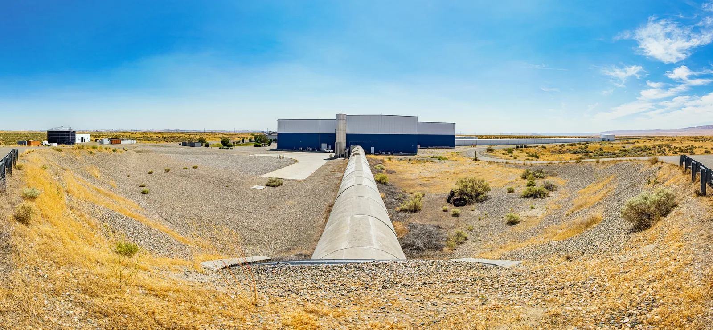

Mittaaminen ja mittauksen luotettavuus
Miksi kymmenen oppilasta saa samasta kuulan vierimisajasta kymmenen eri tulosta, vaikka kaikki käyttävät samaa kelloa?
Pohjatiedot
- Mittaustulos ilmoitetaan lukuarvona ja yksikkönä, ja merkitsevät numerot kertovat sen tarkkuudestaluku Suureet, yksiköt ja SI-järjestelmä
Ydinpolku: etene vaiheiden mukaan. Ydinpolkuun kuuluvat laskujen lisäksi tutkimukset, selitykset ja kuvaajat. Valinnainen-merkityt tehtävät tarjoavat lisäharjoittelua. Valinnaisia tehtäviä 2.
Pohdinta
Fysiikan tunnilla luokka mittaa saman kuulan vierimisajan rampin yläpäästä alapäähän. Jokaisella on samanlainen käsikello, ja jokainen painaa sitä omalla kädellään. Silti tulokset ovat $2{,}18\,\text{s}$, $2{,}45\,\text{s}$, $2{,}68\,\text{s}$, $2{,}67\,\text{s}$, $2{,}40\,\text{s}$ ja niin edelleen. Opettaja sanoo, että kuulan todellinen aika on olemassa, mutta ei kerro sitä.
Miten luokka voi saada näistä luotettavan tuloksen, ja mistä tietää, ettei kello ole kaikilla samalla tavalla väärässä?
Kertaa merkitsevät numerot
Ennusta
Tee ennusteet ennen tutkimista 2 kysymystä
Ennuste 1: toistot ja keskiarvo
Ennuste 2: kello on väärässä
Tutki
Simulaatio
Käyttöohje
Paina Käynnistä, niin mittauksia tehdään yksi kerrallaan. Voit myös vetää Toistoja-liukusäädintä, jolloin näet saman sarjan ensimmäiset $n$ tulosta. Satunnaisvirhe kertoo, kuinka paljon tulokset heittelevät, ja Systemaattinen virhe sen, kuinka paljon kello näyttää joka kerta liikaa (plus) tai liian vähän (miinus). Oranssi piste on viimeisin lukema, vihreä katkoviiva oikea aika ja musta viiva keskiarvo.
Mallin oletukset
Arvot ovat simulaation laskemia mallin arvoja, eivät oikean kokeen mittauksia. Kuulan oikea vierimisaika on $T = 2{,}40\,\text{s}$. Malli tuntee sen, mutta oikeassa kokeessa sitä ei tiedetä. Lukema on $t_i = T + \Delta t_\text{sys} + \Delta t_\text{sat}\,g_i$ pyöristettynä sadasosasekuntiin, missä $g_i$ on kiinteä satunnaislukujen sarja. Sama sarja alkaa aina alusta, joten kokeen voi toistaa. Luku $\Delta t_\text{sat}$ on yksittäisen lukeman tyypillinen poikkeama; monen lukeman vaihteluvälin puolikas on sitä suurempi.
Laskennan selitys
Keskiarvo $\bar{t}$ on $n$ ensimmäisen lukeman summa jaettuna luvulla $n$. Vaihteluvälin puolikas on $\Delta t = \dfrac{t_\text{max} - t_\text{min}}{2}$. Keskiarvon ero oikeaan aikaan on $\bar{t} - T$, ja sen näkee vain mallissa, koska oikeaa aikaa ei yleensä tunneta.
Kuula vierii rampilla, ja käsikello antaa joka kerta lukeman. Pisteet kasautuvat aika-akselille, ja näet keskiarvon ja oikean ajan. Liukusäätimillä valitset toistot ja kahden virheen suuruuden.
Koe 1: satunnaisvirhe ja keskiarvo
Testaa ennuste 1. Alkutila asettaa satunnaisvirheeksi $0{,}15\,\text{s}$ ja systemaattiseksi virheeksi nollan. Vedä Toistoja-liukusäädintä ja kirjaa mittaus, kun $n = 1$, $n = 5$ ja $n = 40$. Katso, mitä keskiarvolle ja vaihteluvälille tapahtuu.
Alkutila: toistoja $n$ = $1$, satunnaisvirhe = $0{,}15\,\text{s}$, systemaattinen virhe = $0\,\text{s}$. Vakiona: satunnaisvirhe, systemaattinen virhe. Muutetaan: toistoja $n$.
| toistoja $n$ | keskiarvo $(\text{s})$ | vaihteluvälin puolikas $(\text{s})$ | ero oikeaan $(\text{s})$ |
|---|
Lisää tutkittavaa 4 tehtävää
Koe 2: systemaattinen virhe ei kumoudu
Testaa ennuste 2. Alkutila asettaa satunnaisvirheeksi $0{,}15\,\text{s}$ ja systemaattiseksi virheeksi $+0{,}30\,\text{s}$. Kirjaa mittaus, kun $n = 1$, $n = 10$ ja $n = 40$. Oikea aika on $T = 2{,}40\,\text{s}$, jonka malli tuntee mutta oikeassa kokeessa ei tunnettaisi.
Alkutila: toistoja $n$ = $1$, satunnaisvirhe = $0{,}15\,\text{s}$, systemaattinen virhe = $0{,}3\,\text{s}$. Vakiona: satunnaisvirhe, systemaattinen virhe. Muutetaan: toistoja $n$.
| toistoja $n$ | keskiarvo $(\text{s})$ |
|---|
Lue taulukosta rivi $n = 40$ ja laske keskiarvon ja oikean ajan $T = 2{,}40\,\text{s}$ erotus. Vastaa sekunteina.
Vihje 1: ohjaava kysymys
Mittausvirhe on tuloksen ja oikean arvon erotus. Tulos on tässä keskiarvo.
Vihje 2: mikä yhteys
Erotus on $\bar{t} - T$, missä $\bar{t}$ on rivin $n = 40$ keskiarvo.
Vihje 3: välivaihe
Jos keskiarvo on $2{,}70\,\text{s}$, erotus on $2{,}70\,\text{s} - 2{,}40\,\text{s}$.
Näytä ratkaisu
Annettu
rivin $n = 40$ keskiarvo taulukosta $\bar{t} = 2{,}70\,\text{s}$ (mallin arvo) ja oikea aika $T = 2{,}40\,\text{s}$
Kysytty
keskiarvon ja oikean ajan erotus eli mittausvirhe $\bar{t} - T$ yksikössä $\text{s}$
Periaate
Mittausvirhe on tuloksen ja oikean arvon erotus. Satunnainen osa on 40 toiston keskiarvossa jo lähes kumoutunut, joten jäljelle jäävä erotus kertoo systemaattisen virheen.
Kaava
erotus $\bar{t} - T$
Muunnokset
Molemmat ajat ovat sekunteina, joten muunnoksia ei tarvita.
Sijoitus
Vastaus
$0{,}30\,\text{s}$
Kaksi desimaalia kuten taulukon keskiarvossa ja oikeassa ajassa. Erotus on sama kuin asetettu systemaattinen virhe $+0{,}30\,\text{s}$.
Järkevyys
Erotus on positiivinen, koska kello näyttää liikaa. Se on lähes täsmälleen asetettu $0{,}30\,\text{s}$, joten 40 toistoa vaimensi satunnaisen osan mutta ei poistanut systemaattista virhettä.
Valinnainen Koe 3: satunnaisvirheen suuruus
Selvitä, miten tulosten hajonta riippuu satunnaisvirheen suuruudesta. Alkutila asettaa $n = 40$ ja systemaattisen virheen nollaksi. Kirjaa mittaus, kun satunnaisvirhe on $0{,}05\,\text{s}$, $0{,}15\,\text{s}$ ja $0{,}30\,\text{s}$.
Alkutila: toistoja $n$ = $40$, satunnaisvirhe = $0{,}05\,\text{s}$, systemaattinen virhe = $0\,\text{s}$. Vakiona: toistoja $n$, systemaattinen virhe. Muutetaan: satunnaisvirhe.
| satunnaisvirhe | vaihteluvälin puolikas $(\text{s})$ | keskiarvo $(\text{s})$ |
|---|
Kuinka monta kertaa suurempi vaihteluvälin puolikas on, kun satunnaisvirhe on $0{,}30\,\text{s}$, kuin kun se on $0{,}05\,\text{s}$?
Vihje 1: ohjaava kysymys
Lue taulukosta vaihteluvälin puolikas kummallakin satunnaisvirheen arvolla.
Vihje 2: mikä yhteys
Suhde saadaan jakamalla suuremmalla satunnaisvirheellä saatu vaihteluvälin puolikas pienemmällä satunnaisvirheellä saadulla puolikkaalla.
Vihje 3: välivaihe
Riveiltä $\dfrac{0{,}525\,\text{s}}{0{,}0850\,\text{s}}$.
Näytä ratkaisu
Annettu
taulukosta vaihteluvälin puolikkaat $\Delta t_1 = 0{,}0850\,\text{s}$ (satunnaisvirhe $0{,}05\,\text{s}$) ja $\Delta t_2 = 0{,}525\,\text{s}$ (satunnaisvirhe $0{,}30\,\text{s}$), mallin arvoja
Kysytty
suhde $k = \dfrac{\Delta t_2}{\Delta t_1}$
Periaate
Mitä suurempi satunnaisvirhe on, sitä enemmän tulokset hajaantuvat ja sitä suurempi on vaihteluvälin puolikas. Hajonta on suoraan verrannollinen satunnaisvirheen suuruuteen, joten suhteen pitäisi olla lähellä satunnaisvirheiden suhdetta.
Kaava
$k = \dfrac{\Delta t_2}{\Delta t_1}$
Muunnokset
Molemmat ovat sekunteina ja suhteessa yksiköt supistuvat, joten muunnoksia ei tarvita.
Sijoitus
Vastaus
$6{,}2$
Kertaa. Kaksi merkitsevää numeroa riittää: lukemat on pyöristetty sadasosasekunteihin, joten pienempi puolikas $0{,}0850\,\text{s}$ on epävarma jo toisessa numerossaan, vaikka taulukko näyttää kolme.
Järkevyys
Satunnaisvirheiden suhde on $\dfrac{0{,}30}{0{,}05} = 6$, ja saatu $6{,}2$ on lähellä sitä. Pieni ero johtuu siitä, että mallin lukemat pyöristetään sadasosasekuntiin.
Aineisto: lämpömittari jäävedessä
Simuloitu esimerkkiaineisto
Oppilas tarkistaa lämpömittarin upottamalla sen sulavan jään ja veden seokseen, jonka lämpötila on $0\,{}^\circ\text{C}$. Hän lukee mittaria kahdeksan kertaa (esimerkkiaineisto, ei oikea koe).
| Lukukerta | 1 | 2 | 3 | 4 | 5 | 6 | 7 | 8 |
|---|---|---|---|---|---|---|---|---|
| Lukema (${}^\circ\text{C}$) | 1,4 | 1,6 | 1,5 | 1,5 | 1,6 | 1,4 | 1,5 | 1,5 |
Lukemien keskiarvo on $1{,}5\,{}^\circ\text{C}$ ja vaihteluvälin puolikas $0{,}1\,{}^\circ\text{C}$.
Johtopäätös kokeista
Kirjoita kokeiden 1 ja 2 sekä lämpömittariaineiston perusteella: mitä keskiarvon ottaminen korjaa, mitä se ei korjaa ja miten systemaattisen virheen voi huomata? Perustele mallin arvoilla ja aineistolla.
Mallivastaus
Kokeessa 1 yksittäisen tuloksen ero oikeaan aikaan oli mallin arvoissa $-0{,}22\,\text{s}$, mutta 40 tuloksen keskiarvon ero alle $0{,}01\,\text{s}$, joten keskiarvo vaimentaa satunnaisvirhettä. Vaihteluvälin puolikas pysyi silti noin $0{,}25\,\text{s}$:ssa, koska yksittäiset mittaukset heittelevät edelleen. Kokeessa 2 mallin kellossa oli systemaattinen virhe $+0{,}30\,\text{s}$, ja 40 toiston keskiarvo asettui noin $0{,}30\,\text{s}$ oikean ajan yläpuolelle: keskiarvo ei korjaa systemaattista virhettä. Lämpömittariaineistossa lukemat toistuivat hyvin ($1{,}4\,{}^\circ\text{C}$–$1{,}6\,{}^\circ\text{C}$), mutta jäävedessä oikea arvo on $0\,{}^\circ\text{C}$. Systemaattinen virhe huomattiin siis vertaamalla tunnettuun vertailuarvoon, ja se korjataan vähentämällä virhe lukemista.
Arvioi oma vastauksesi
Rastita kohdat, jotka omassa vastauksessasi jo on.
Kertaa asia teoriasta ja harjoittele tehtävillä.
Teoria
Ydinajatus
Mittaus on suureen arvon määrittämistä vertaamalla sitä yksikköön. Mittaustulos on lukuarvo ja yksikkö, esimerkiksi $2{,}43\,\text{s}$. Tulos poikkeaa yleensä hieman suureen oikeasta arvosta, koska mittarin lukeminen, mittaustapa ja olosuhteet tuovat siihen poikkeaman. Tuloksen ja oikean arvon erotus $x - x_\text{oikea}$ on mittausvirhe. Jokaiseen mittaustulokseen liittyy epävarmuutta, myös taitavan mittaajan tulokseen. Oikeaa arvoa ei yleensä tunneta, joten ei tunneta myöskään mittausvirhettä tai sen suuruutta. Siksi tuloksen mukana ilmoitetaan mittausepävarmuus. Se on arvio siitä, kuinka suuri mittausvirhe voi olla. Se ei yleensä tarkoita ehdotonta suurinta mahdollista poikkeamaa oikeasta arvosta.
Virheet jaetaan kolmeen lajiin: karkeaan virheeseen, satunnaisvirheeseen ja systemaattiseen virheeseen. Ne erottaa toisistaan se, miten ne käyttäytyvät, kun mittaus toistetaan.
Karkea virhe
Karkea virhe on yksittäinen selvä erehdys: mittari luetaan väärin, luku kirjataan väärin (esimerkiksi $3{,}52\,\text{s}$ eikä $3{,}25\,\text{s}$), kello käynnistetään kerran vahingossa vasta, kun kuula on jo liikkeellä, tai tulos kirjataan väärässä yksikössä. Se näkyy yleensä tuloksena, joka poikkeaa selvästi muista. Karkeaa virhettä ei arvioida eikä keskiarvoisteta, vaan se etsitään: poikkeava tulos tarkistetaan ja mittaus voidaan tarvittaessa toistaa. Tulosta ei poisteta pelkästään siksi, että se poikkeaa muista: se jätetään pois laskuista vain, jos virheen syy löytyy, ja poisjättö perustellaan ja kirjataan.
Satunnaisvirhe
Satunnaisvirhe vaihtelee mittauksesta toiseen sattumanvaraisesti ja voi olla kumpaan suuntaan tahansa. Käsikellolla kuulan vierimisaikaa mitattaessa se syntyy reaktioajasta: välillä kello käynnistyy hieman liian aikaisin ja välillä liian myöhään. Myös asteikon lukeminen kahden viivan väliltä tuo satunnaisvirhettä. Se näkyy hajontana: samasta suureesta saadaan joka kerta vähän eri luku. Kun mittaus toistetaan, hajonta tulee näkyviin, ja keskiarvossa satunnaisvirheen vaikutus vaimenee, vaikka yksittäisten tulosten hajonta ei pienene: liian suuret ja liian pienet tulokset kumoavat osin toisensa.
Systemaattinen virhe
Systemaattinen virhe on joka mittauksessa suunnaltaan ja suuruudeltaan lähes sama. Se syntyy esimerkiksi väärästä nollakohdasta (vaaka näyttää tyhjänä $1{,}2\,\text{g}$), huonosti säädetystä mittarista tai mittaustavasta, kuten asteikon katsomisesta vinosti. Kaikki tulokset siirtyvät samaan suuntaan, joten ne voivat olla tiiviisti ryhmässä mutta väärässä paikassa. Toistaminen ja keskiarvo eivät poista sitä. Se huomataan vertaamalla tulosta tunnettuun vertailuarvoon tai toiseen mittaustapaan, ja sitten se korjataan.
Toistettavuus ja oikeellisuus
Mittauksen luotettavuutta kuvataan kahdella asialla. Toistettavuus kertoo, kuinka lähelle toisiaan toistetut mittaukset osuvat, ja sitä heikentää satunnaisvirhe. Oikeellisuus kertoo, kuinka lähellä keskiarvo on oikeaa arvoa, ja sitä heikentää systemaattinen virhe. Mittaus voi olla toistettava mutta ei oikea, kuten kuvan alempi sarja. Luotettavassa mittauksessa on molemmat.

Keskiarvo ja virhearvio
Toistetun mittauksen paras arvio on tulosten keskiarvo:
- keskiarvo
- $$\bar{x} = \frac{x_1 + x_2 + \dots + x_n}{n}$$
missä $\bar{x}$ on keskiarvo, $x_1, x_2, \dots, x_n$ ovat yksittäiset mittaustulokset ja $n$ on mittausten lukumäärä. Keskiarvo summaa tulokset ja jakaa summan lukumäärällä, joten yhden tuloksen heitto vaikuttaa siihen sitä vähemmän, mitä enemmän mittauksia on.
Tässä kurssissa toistettujen tulosten hajontaa eli satunnaisvirheen suuruutta arvioidaan yksinkertaisella likimääräisellä menetelmällä, vaihteluvälin puolikkaana:
$$\Delta x = \frac{x_\text{max} - x_\text{min}}{2}$$
missä $\Delta x$ on virhearvio, $x_\text{max}$ suurin ja $x_\text{min}$ pienin tulos. Virhearvio eli mittausepävarmuus ei ole itse mittausvirhe, jota ei tunneta, vaan arvio siitä, kuinka suuri mittausvirhe voi olla; se on aina positiivinen. Tulos ilmoitetaan muodossa $\bar{x} \pm \Delta x$. Virhearvio on karkea arvio, ei ehdoton raja: yksittäinen tulos voi joskus jäädä sen ulkopuolelle. Vaihteluvälin puolikas kuvaa yksittäisten tulosten hajontaa. Keskiarvon epävarmuus on yleensä sitä pienempi, ja sitä pienempi, mitä enemmän mittauksia on, joten keskiarvolle $\Delta x$ on varovainen arvio. Menetelmä sopii tämän kurssin muutaman toiston mittauksiin; tarkemmat menetelmät perustuvat tilastolliseen hajontaan.
Vaihteluvälin puolikas on yksinkertainen arvio tulosten hajonnasta, ei yleispätevä tapa määrittää mittausepävarmuutta. Se ei paljasta systemaattista virhettä, joka siirtää kaikkia tuloksia samaan suuntaan. Jos kaikki tulokset ovat samat, hajontaa ei näy, mutta epävarmuus ei silti ole nolla: silloin arvioidaan lukeman epävarmuus, kuten alla.
Virhearvio pyöristetään yhteen merkitsevään numeroon, tai kahteen, jos ensimmäinen numero on 1. Tulos pyöristetään samaan desimaaliin: $3{,}18\,\text{s} \pm 0{,}12\,\text{s}$ eikä $3{,}1817\,\text{s} \pm 0{,}12\,\text{s}$. Näin tuloksessa ei ole numeroita, joihin epävarmuuden vuoksi ei voi luottaa.
Kun mittaus tehdään vain kerran ja arvo luetaan asteikolta, lukeman epävarmuutta voidaan yksinkertaisessa tilanteessa arvioida esimerkiksi puoleksi pienimmästä asteikkovälistä $d$:
$$\Delta x = \frac{d}{2}$$
Viivaimella, jonka pienin asteikkoväli on $1{,}0\,\text{mm}$, lukeman epävarmuudeksi voidaan näin arvioida $0{,}5\,\text{mm}$. Mittauksen kokonaisepävarmuuteen voivat kuitenkin vaikuttaa myös mittausmenetelmä, mittalaite ja muut virhelähteet. Pienin asteikkoväli tai näytön viimeisen numeron askel on mittalaitteen resoluutio, eikä se yksin kerro epävarmuutta: käsikello näyttää sadasosasekunnit, mutta käsin otetun ajan epävarmuus on reaktioajan vuoksi sekunnin kymmenesosien luokkaa.
Virhearvion eli mittausepävarmuuden suhdetta tulokseen kutsutaan suhteelliseksi epävarmuudeksi:
$$\varepsilon = \frac{\Delta x}{\bar{x}} \cdot 100\,\%$$
missä $\varepsilon$ on suhteellinen epävarmuus prosentteina. Se kertoo, onko epävarmuus tuloksen kokoon nähden pieni vai suuri: epävarmuus $0{,}5\,\text{mm}$ on pieni metrin mittaukselle mutta suuri millimetrin paksuiselle langalle.
Systemaattinen virhe arvioidaan mittaamalla suure, jonka oikea arvo tunnetaan, ja vertaamalla mittausten keskiarvoa tähän arvoon. Vertailukohde voi olla esimerkiksi tyhjä vaaka, jäävesi, jonka lämpötila on $0\,{}^\circ\text{C}$, tai tarkasti tunnetun pituinen sauva:
$$\Delta x_\text{sys} = \bar{x}_\text{vertailu} - x_\text{oikea}$$
missä $\bar{x}_\text{vertailu}$ on vertailumittausten keskiarvo ja $x_\text{oikea}$ vertailusuureen oikea arvo. Korjattu tulos saadaan vähentämällä virhe lukemasta:
$$x = x_\text{lukema} - \Delta x_\text{sys}$$
Yleinen virhekäsitys
Moni ajattelee, että tarkka laite tai paljon toistoja takaavat oikean tuloksen. Tarkkakin laite voi olla väärin säädetty, jolloin sen lukemat ovat tiiviisti ryhmässä mutta väärässä paikassa. Toistot pienentävät satunnaisvirhettä mutta eivät systemaattista virhettä, ja hyvä toistettavuus ei kerro oikeellisuudesta. Toinen virhekäsitys on pitää kaikkea virhettä huolimattomuutena. Huolimattomuudesta syntyy karkea virhe, joka etsitään ja jätetään pois vain perustellusta ja kirjatusta syystä, mutta satunnais- ja systemaattinen virhe kuuluvat myös taitavan mittaajan tulokseen, ja siksi ne arvioidaan ja ilmoitetaan. Kolmas on laskea keskiarvo erilaisissa yksiköissä olevista luvuista: tulokset muunnetaan ensin samaan yksikköön.
Tiivistelmä
- Mittausvirhe on tuloksen ja oikean arvon erotus $x - x_\text{oikea}$. Jokaiseen mittaustulokseen liittyy epävarmuutta. Virhettä ei yleensä tunneta, mutta sen mahdollinen suuruus arvioidaan mittausepävarmuutena ja ilmoitetaan tuloksen mukana.
- Karkea virhe on yksittäinen erehdys, kuten väärin luettu tai kirjattu lukema. Se näkyy usein selvästi muista poikkeavana tuloksena, joka tarkistetaan; tulos jätetään pois vain, jos virheen syy löytyy, ja syy kirjataan.
- Satunnaisvirhe vaihtelee mittauksesta toiseen ja näkyy hajontana. Keskiarvossa $\bar{x}$ satunnaisvirheen vaikutus vaimenee, vaikka yksittäisten tulosten hajonta ei pienene. Tässä kurssissa hajontaa arvioidaan likimääräisesti vaihteluvälin puolikkaalla $\Delta x$, joka on keskiarvolle varovainen epävarmuusarvio.
- Systemaattinen virhe siirtää kaikkia tuloksia samaan suuntaan, eikä toistaminen poista sitä. Se huomataan vertailuarvolla ja korjataan: $x = x_\text{lukema} - \Delta x_\text{sys}$.
- Toistettavuus kertoo satunnaisvirheestä ja oikeellisuus systemaattisesta virheestä. Luotettava mittaus on sekä toistettava että oikea.
- Tulos ilmoitetaan muodossa $\bar{x} \pm \Delta x$ yksikköineen. Virhearvio pyöristetään yhteen merkitsevään numeroon (kahteen, jos ensimmäinen numero on 1), ja tulos samaan desimaaliin.
Palaa ennusteisiisi
Vertaa ennusteitasi kokeisiin 1 ja 2. Mitä toistaminen korjaa ja mitä ei? Palaa myös alun luokkaan: miten he saisivat kuulan ajasta luotettavan tuloksen ja mistä he voisivat huomata, että kello on kaikilla väärässä?
Muuttaisitko ennustettasi?
Esimerkit
Kun olet opiskellut luvun teorian, siirry ohjattuihin esimerkkeihin. Ensimmäisessä seuraat mallilaskua vaihe vaiheelta, seuraavissa teet valinnat itse, ja vihjeet auttavat, jos jäät jumiin.
Esimerkki 1: Vierimisaika ja sen virhearvio
Oppilas mittaa kuulan vierimisajan rampilla käsikellolla kuusi kertaa ja saa tulokset $3{,}12\,\text{s}$, $3{,}25\,\text{s}$, $3{,}07\,\text{s}$, $3{,}31\,\text{s}$, $3{,}19\,\text{s}$ ja $3{,}15\,\text{s}$. Mikä on mittaustulos virhearvion kanssa ja kuinka suuri on suhteellinen epävarmuus?
Vaihe 1/7
Tunnetut ja kysytty. Mittauksia on $n = 6$, ja pienin tulos on $t_\text{min} = 3{,}07\,\text{s}$ ja suurin $t_\text{max} = 3{,}31\,\text{s}$. Kysytään keskiarvoa $\bar{t}$, virhearviota $\Delta t$ ja suhteellista epävarmuutta $\varepsilon$.
Vaihe 2/7
Periaate. Käsin tehdyssä ajanotossa on satunnaisvirhe, koska reaktioaika vaihtelee. Siksi tulokseksi otetaan keskiarvo ja virhearvioksi vaihteluvälin puolikas. Suhteellinen epävarmuus vertaa virhearviota tulokseen.
Vaihe 3/7
Kaava ratkaistuna. $$\begin{aligned} \bar{t} &= \frac{t_1 + t_2 + \dots + t_n}{n} \\ \Delta t &= \frac{t_\text{max} - t_\text{min}}{2} \\ \varepsilon &= \frac{\Delta t}{\bar{t}} \cdot 100\,\% \end{aligned}$$
Vaihe 4/7
Yksikkömuunnokset. Ei tarvita: kaikki ajat ovat sekunteina, ja suhteellinen epävarmuus on yksikötön luku, joka kerrotaan sadalla prosenteiksi.
Vaihe 5/7
Sijoitus. Tulosten summa on
Sijoitetaan se ja muut lukuarvot yksiköineen:
$$\begin{aligned} \bar{t} &= \frac{t_1 + t_2 + \dots + t_n}{n} \\ &= \frac{19{,}09\,\text{s}}{6} \\ &= 3{,}1817\,\text{s} \\[4pt] \Delta t &= \frac{t_\text{max} - t_\text{min}}{2} \\ &= \frac{3{,}31\,\text{s} - 3{,}07\,\text{s}}{2} \\ &= 0{,}12\,\text{s} \\[4pt] \varepsilon &= \frac{\Delta t}{\bar{t}} \cdot 100\,\% \\ &= \frac{0{,}12\,\text{s}}{3{,}1817\,\text{s}} \cdot 100\,\% \\ &= 3{,}8\,\% \end{aligned}$$
Vaihe 6/7
Tulos. Virhearvio $0{,}12\,\text{s}$ on kahden numeron luku, koska sen ensimmäinen numero on 1. Keskiarvo pyöristetään samaan desimaaliin, joten mittaustulos on $t = 3{,}18\,\text{s} \pm 0{,}12\,\text{s}$. Suhteellinen epävarmuus on $3{,}8\,\%$, kaksi merkitsevää numeroa kuten virhearviossa.
Vaihe 7/7
Järkevyys. Väli $3{,}18\,\text{s} \pm 0{,}12\,\text{s}$ eli $3{,}06\,\text{s}$–$3{,}30\,\text{s}$ kattaa viisi kuudesta tuloksesta. Tulos $3{,}31\,\text{s}$ jää juuri sen ulkopuolelle, mikä sopii siihen, että virhearvio on karkea. Suhteellinen epävarmuus on muutaman prosentin, mikä on tavallista käsin otetulle ajalle. Toistot kuitenkin kertovat vain satunnaisvirheestä: systemaattisen virheen paljastaisi vasta vertailu toiseen mittaustapaan.
Esimerkki 2: Karkea virhe
Valinnainen Esimerkki 3: Etsi virhe
Esimerkki 4: Sovella uuteen tilanteeseen
Keittiövaaka näyttää tyhjänä $0{,}8\,\text{g}$. Oppilas punnitsee viisi samanlaista kolikkoa yhdessä viisi kertaa ja saa lukemat $27{,}9\,\text{g}$, $28{,}1\,\text{g}$, $28{,}0\,\text{g}$, $27{,}8\,\text{g}$ ja $28{,}2\,\text{g}$. Mikä on yhden kolikon massa? Vastaa grammoina.
Vihje 1: ohjaava kysymys
Mitä virhelajia vaa'an nollalukema edustaa ja mitä virhelajia lukemien vaihtelu? Kumpaakin käsitellään eri tavalla.
Vihje 2: mikä yhteys
Laske ensin lukemien keskiarvo, korjaa sitten nollakohta vähentämällä nollalukema ja jaa lopuksi kolikoiden lukumäärällä.
Vihje 3: välivaihe
Lukemien summa on $27{,}9 + 28{,}1 + 28{,}0 + 27{,}8 + 28{,}2$ grammaa. Keskiarvo $\bar{m}$ on summa jaettuna viidellä, ja yhden kolikon massa on $\dfrac{\bar{m} - 0{,}8\,\text{g}}{5}$.
Näytä ratkaisu
Annettu
vaa'an nollalukema $m_0 = 0{,}8\,\text{g}$; lukemat $27{,}9\,\text{g}$, $28{,}1\,\text{g}$, $28{,}0\,\text{g}$, $27{,}8\,\text{g}$ ja $28{,}2\,\text{g}$; kolikoita $N = 5$
Kysytty
yhden kolikon massa $m_\text{kolikko}$ yksikössä $\text{g}$
Periaate
Lukemien vaihtelu on satunnaisvirhettä, jota keskiarvo vaimentaa. Nollalukema $0{,}8\,\text{g}$ on systemaattinen virhe, joka on mukana jokaisessa lukemassa ja siis keskiarvossa, joten se on vähennettävä. Viiden kolikon yhteismassa jaetaan lopuksi viidellä.
Kaava
Muunnokset
Kaikki massat ovat grammoina, joten muunnoksia ei tarvita.
Sijoitus
Summa on
joten
Vastaus
$5{,}44\,\text{g}$
Kolme merkitsevää numeroa: erotus $27{,}2\,\text{g}$ tunnetaan kolmella numerolla, ja jako luvulla $5$ on tarkka.
Järkevyys
Arvio: $28\,\text{g} : 5 \approx 5{,}6\,\text{g}$, ja korjaus pienentää massaa $0{,}8\,\text{g} : 5 = 0{,}16\,\text{g}$, joten $5{,}6\,\text{g} - 0{,}16\,\text{g} \approx 5{,}44\,\text{g}$. Kolikon massa on muutaman gramman luokkaa, kuten pienillä kolikoilla, ja korjattu massa on lukemaa pienempi, koska vaaka näytti liikaa.
Kertaa luvun käsitteet
Jos valitset Kertaa myöhemmin, kortti siirtyy kertauspakkaasi.
- Suure
- Mitattava ominaisuus, kuten pituus, massa tai aika.
- Yksikkö
- Sovittu vertailuarvo, jonka avulla mitattu ominaisuus ilmaistaan.
- Mittaustulos
- Lukuarvon ja mittayksikön muodostama suureen arvo.
- Mittausvirhe
- Mittaustuloksen ja suureen oikean arvon erotus. Sitä ei yleensä tunneta, joten sen mahdollinen suuruus arvioidaan mittausepävarmuutena.
- Satunnaisvirhe
- Vaihteleva poikkeama, jonka vaikutusta voidaan pienentää toistamalla mittauksen ja laskemalla keskiarvon.
- Systemaattinen virhe
- Samaan suuntaan vaikuttava poikkeama, jonka syynä voi olla viallinen laite tai menetelmä.
- Karkea virhe
- Selvä poikkeama, joka syntyy esimerkiksi lukuvirheestä, väärästä kirjauksesta tai laitteen virheellisestä käytöstä.
- Mittalaitteen resoluutio
- Pienin lukeman muutos, jonka mittalaite pystyy näyttämään, esimerkiksi pienin asteikkoväli tai näytön viimeisen numeron askel. Se ei yksin kerro mittauksen epävarmuutta.
Tehtävät
Taso 1 · perusharjoitus 8 tehtävää
Yksi kaava tai yksi päättelyaskel. Ydintehtävät ensin, loput lisäharjoitusta.
- Tehtävä 3-1Ydintehtävä
Oppilas mittaa pienen kuulan putoamisajan neljä kertaa ja saa tulokset $0{,}52\,\text{s}$, $0{,}48\,\text{s}$, $0{,}55\,\text{s}$ ja $0{,}49\,\text{s}$. Mikä on mittaussarjan keskiarvo?
Vastaus
$0{,}51\,\text{s}$
Näytä ratkaisu
Annettu
$t_1 = 0{,}52\,\text{s}$, $t_2 = 0{,}48\,\text{s}$, $t_3 = 0{,}55\,\text{s}$, $t_4 = 0{,}49\,\text{s}$; mittauksia on $n = 4$
Kysytty
mittaussarjan keskiarvo $\bar{t}$ yksikössä $\text{s}$
Periaate
Jokaisessa mittauksessa on satunnaisvirhe, joka heittää tulosta milloin mihinkin suuntaan. Kun tulokset lasketaan yhteen ja summa jaetaan mittausten lukumäärällä, heitot kumoavat osin toisensa. Siksi keskiarvo on parempi arvio kuin yksittäinen tulos.
Kaava
$\bar{t}$$= \dfrac{t_1 + t_2 + t_3 + t_4}{n}$Muunnokset
Kaikki ajat ovat sekunteina, joten yksiköitä ei tarvitse muuntaa.
Sijoitus
Summa on
$0{,}52\,\text{s} + 0{,}48\,\text{s} + 0{,}55\,\text{s} + 0{,}49\,\text{s}$$= 2{,}04\,\text{s}$joten
$\bar{t}$$= \dfrac{2{,}04\,\text{s}}{4}$$= 0{,}51\,\text{s}$Vastaus
$0{,}51\,\text{s}$
Kaksi merkitsevää numeroa kuten mittaustuloksissa (jakaja $4$ on tarkka lukumäärä).
Järkevyys
Keskiarvon täytyy olla pienimmän tuloksen $0{,}48\,\text{s}$ ja suurimman tuloksen $0{,}55\,\text{s}$ välissä, ja $0{,}51\,\text{s}$ on. Tarkistus takaperin: $4 \cdot 0{,}51\,\text{s} = 2{,}04\,\text{s}$ on tulosten summa.
- Tehtävä 3-2
Vertailukappaleen pituus tunnetaan tarkasti: se on $20{,}0\,\text{cm}$. Mittanauha antaa kappaleen pituudeksi $20{,}3\,\text{cm}$. Mikä on mittausvirhe etumerkkeineen?
Vastaus
$+0{,}3\,\text{cm}$
Näytä ratkaisu
Annettu
oikea arvo (vertailupituus) $x_\text{oikea} = 20{,}0\,\text{cm}$, mittaustulos $x = 20{,}3\,\text{cm}$
Kysytty
mittausvirhe $x - x_\text{oikea}$ etumerkkeineen yksikössä $\text{cm}$
Periaate
Mittausvirhe on mittaustuloksen ja oikean arvon erotus. Etumerkki kertoo suunnan: plus tarkoittaa, että tulos on liian suuri, ja miinus, että se on liian pieni.
Kaava
Mittausvirhe on tuloksen ja oikean arvon erotus: $\text{mittausvirhe} = x - x_\text{oikea}$
Muunnokset
Molemmat pituudet ovat senttimetreinä, joten muunnoksia ei tarvita.
Sijoitus
$x - x_\text{oikea}$$= 20{,}3\,\text{cm} - 20{,}0\,\text{cm}$$= +0{,}3\,\text{cm}$Vastaus
$+0{,}3\,\text{cm}$
Eli tulos on liian suuri. Erotus tunnetaan vain yhden desimaalin tarkkuudella, koska molemmat pituudet on annettu yhdellä desimaalilla.
Järkevyys
Tulos $20{,}3\,\text{cm}$ on suurempi kuin oikea arvo $20{,}0\,\text{cm}$, joten virheen pitää olla positiivinen. Suhteessa pituuteen virhe on
$\dfrac{0{,}3\,\text{cm}}{20{,}0\,\text{cm}}$$\approx 1{,}5\,\%$mikä on mittanauhalle suuri virhe (nauhalla päästään tavallisesti noin millimetrin tarkkuuteen), joten syy on todennäköisesti systemaattinen, esimerkiksi kulunut nauhan alkupää tai väärä nollakohta.
- Tehtävä 3-3
Heilurin kymmenen heilahduksen aika mitataan käsikellolla viisi kertaa. Kuvaan on merkitty jokainen tulos pisteenä aika-akselille. Lue kuvasta pienin ja suurin tulos. Mikä on tulosten vaihteluvälin puolikas?
Vastaus
$0{,}35\,\text{s}$
Näytä ratkaisu
Annettu
kuvan viisi tulosta aika-akselilla; pienin tulos $t_\text{min} = 12{,}2\,\text{s}$ ja suurin $t_\text{max} = 12{,}9\,\text{s}$
Kysytty
vaihteluvälin puolikas $\Delta t$ yksikössä $\text{s}$
Periaate
Tulosten hajonta kertoo satunnaisvirheen suuruudesta. Yksinkertaisin arvio on vaihteluvälin eli suurimman ja pienimmän tuloksen erotuksen puolikas, koska yksittäinen tulos voi poiketa keskikohdasta kumpaan suuntaan tahansa. Vaihteluvälin määräävät vain kaksi ääripäätä, joten muita pisteitä ei tarvita.
Kuvaajan lukeminen
Akselin pystyviivat ovat $0{,}1\,\text{s}$:n välein ja numerot $0{,}2\,\text{s}$:n välein. Vasemmanpuoleisin piste on viivalla $12{,}2\,\text{s}$, joten $t_\text{min} = 12{,}2\,\text{s}$. Oikeanpuoleisin piste on viivalla, joka on yhden välin verran numeron $12{,}8$ oikealla puolella, joten $t_\text{max} = 12{,}9\,\text{s}$. Muut pisteet ovat kohdissa $12{,}4\,\text{s}$, $12{,}6\,\text{s}$ ja $12{,}7\,\text{s}$.
Kaava
$\Delta t$$= \dfrac{t_\text{max} - t_\text{min}}{2}$Muunnokset
Kaikki ajat ovat sekunteina, joten muunnoksia ei tarvita.
Sijoitus
$\Delta t$$= \dfrac{12{,}9\,\text{s} - 12{,}2\,\text{s}}{2}$$= \dfrac{0{,}7\,\text{s}}{2}$$= 0{,}35\,\text{s}$Vastaus
$0{,}35\,\text{s}$
On vaihteluvälin tarkka puolikas. Epävarmuus ilmoitetaan yhdellä merkitsevällä numerolla, joten raportissa se on $0{,}4\,\text{s}$. Kumpikin vastaus hyväksytään.
Järkevyys
Kuvassa pisteiden ääripäiden väli on seitsemän ruutua eli $0{,}7\,\text{s}$, ja sen puolikas on pienempi kuin vaihteluväli, kuten pitää. Vaihteluvälin keskikohta on $12{,}55\,\text{s}$, ja $12{,}55\,\text{s} \pm 0{,}35\,\text{s}$ antaa juuri välin $12{,}2\,\text{s}$–$12{,}9\,\text{s}$, jolle kaikki pisteet osuvat.
- Tehtävä 3-4
Keittiövaaka näyttää tyhjänä lukeman $0{,}9\,\text{g}$. Vaa'alle pannaan kappale, ja vaaka näyttää $36{,}4\,\text{g}$. Mikä on kappaleen massa?
Vastaus
$35{,}5\,\text{g}$
Näytä ratkaisu
Annettu
vaa'an lukema tyhjänä (nollalukema) $m_0 = 0{,}9\,\text{g}$, lukema kappaleen kanssa $m_\text{lukema} = 36{,}4\,\text{g}$
Kysytty
kappaleen massa $m$ yksikössä $\text{g}$
Periaate
Vaaka lisää jokaiseen lukemaan saman määrän $0{,}9\,\text{g}$, koska se näyttää sen jo tyhjänä. Tämä on systemaattinen virhe, ja se korjataan vähentämällä nollalukema lukemasta.
Kaava
$m = m_\text{lukema} - m_0$
Muunnokset
Molemmat lukemat ovat grammoina, joten muunnoksia ei tarvita.
Sijoitus
$m$$= 36{,}4\,\text{g} - 0{,}9\,\text{g}$$= 35{,}5\,\text{g}$Vastaus
$35{,}5\,\text{g}$
Kolme merkitsevää numeroa; molemmat lukemat tunnetaan yhden desimaalin tarkkuudella.
Järkevyys
Vaaka näyttää liikaa, joten oikean massan täytyy olla pienempi kuin lukema, ja $35{,}5\,\text{g} < 36{,}4\,\text{g}$. Tarkistus: $35{,}5\,\text{g} + 0{,}9\,\text{g} = 36{,}4\,\text{g}$.
- Tehtävä 3-5
Viivaimen pienin asteikkoväli on $1{,}0\,\text{mm}$, ja lukeman epävarmuudeksi arvioidaan puoli asteikkoväliä. Kuinka suuri on lukeman epävarmuus?
Vastaus
$0{,}5\,\text{mm}$
Näytä ratkaisu
Annettu
pienin asteikkoväli $d = 1{,}0\,\text{mm}$
Kysytty
lukeman epävarmuus $\Delta x$ yksikössä $\text{mm}$
Periaate
Lukema luetaan asteikolta lähimmän asteikkoviivan mukaan. Yksinkertaisessa tilanteessa lukeman epävarmuudeksi arvioidaan puoli asteikkoväliä; kokonaisepävarmuus voi olla suurempi, jos esimerkiksi kappaleen reuna on epäselvä tai asteikkoa katsotaan vinosti.
Kaava
$\Delta x = \dfrac{d}{2}$
Muunnokset
Asteikkoväli on jo millimetreinä, joten muunnoksia ei tarvita.
Sijoitus
$\Delta x$$= \dfrac{1{,}0\,\text{mm}}{2}$$= 0{,}5\,\text{mm}$Vastaus
$0{,}5\,\text{mm}$
; virhearvio on karkea arvio, joten se ilmoitetaan yhdellä merkitsevällä numerolla.
Järkevyys
Jos viivaimelta luetaan $23{,}0\,\text{mm}$, lukeman perusteella pituus on arviolta välillä $22{,}5\,\text{mm}$–$23{,}5\,\text{mm}$, ja tämä väli on yhden asteikkovälin eli $1{,}0\,\text{mm}$ levyinen. Lukeman epävarmuus on siis pienempi kuin asteikkoväli, mutta mittauksen kokonaisepävarmuus voi olla tätä suurempi.
- Tehtävä 3-6Ydintehtävä
Mikä seuraavista tilanteista on esimerkki systemaattisesta virheestä?
Vastaus
Lämpömittarin nollakohta on väärin, joten se näyttää jäävedessä joka kerralla noin $1{,}5\,{}^\circ\text{C}$.
Näytä ratkaisu
Kysytty
mikä tilanteista on systemaattinen virhe.
Periaate
Systemaattinen virhe on joka mittauksessa suunnaltaan ja suuruudeltaan lähes sama, esimerkiksi mittarin väärä nollakohta. Satunnaisvirhe vaihtelee sattumanvaraisesti kumpaan suuntaan tahansa, ja karkea virhe on yksittäinen erehdys, joka näkyy muista poikkeavana tuloksena.
Mallivastaus
Systemaattinen virhe on lämpömittarin väärä nollakohta: jäävedessä mittari näyttää joka kerralla noin $1{,}5\,{}^\circ\text{C}$ liikaa, joten kaikki lukemat siirtyvät samaan suuntaan. Toistaminen ja keskiarvo eivät poista sitä, mutta vertailu tunnettuun arvoon (jäävesi on $0\,{}^\circ\text{C}$) paljastaa sen, ja lukemat korjataan vähentämällä virhe. Kellon vaihteleva pysäytyshetki ja vaihteleva katselusuunta ovat satunnaisvirheitä, joita keskiarvo pienentää. Väärin kirjattu luku $34{,}2\,\text{s}$ on karkea virhe, joka tarkistetaan ja korjataan.
- Tehtävä 3-7
Puupalikan leveys mitataan viisi kertaa: $5{,}41\,\text{cm}$, $5{,}47\,\text{cm}$, $5{,}39\,\text{cm}$, $5{,}44\,\text{cm}$ ja $5{,}43\,\text{cm}$. Virhearvioksi otetaan vaihteluvälin puolikas ja se pyöristetään yhteen merkitsevään numeroon. Anna keskiarvo pyöristettynä niin, että sen tarkkuus sopii virhearvioon.
Vastaus
$5{,}43\,\text{cm}$
Näytä ratkaisu
Annettu
$x_1 = 5{,}41\,\text{cm}$, $x_2 = 5{,}47\,\text{cm}$, $x_3 = 5{,}39\,\text{cm}$, $x_4 = 5{,}44\,\text{cm}$, $x_5 = 5{,}43\,\text{cm}$; $n = 5$
Kysytty
keskiarvo $\bar{x}$ yksikössä $\text{cm}$, pyöristettynä virhearvion $\Delta x$ tarkkuuteen
Periaate
Tulos ilmoitetaan muodossa $\bar{x} \pm \Delta x$. Virhearvio pyöristetään yhteen merkitsevään numeroon (kahteen, jos ensimmäinen numero on 1), ja keskiarvo pyöristetään samaan desimaaliin, koska numerot virhearvion desimaalin jälkeen ovat jo epävarmoja.
Kaava
$\bar{x}$$= \dfrac{x_1 + x_2 + x_3 + x_4 + x_5}{n}$$\Delta x$$= \dfrac{x_\text{max} - x_\text{min}}{2}$Muunnokset
Kaikki pituudet ovat senttimetreinä, joten muunnoksia ei tarvita.
Sijoitus
Tulosten summa on
$5{,}41\,\text{cm} + 5{,}47\,\text{cm} + 5{,}39\,\text{cm} + 5{,}44\,\text{cm} + 5{,}43\,\text{cm}$$= 27{,}14\,\text{cm}$joten
$\bar{x}$$= \dfrac{27{,}14\,\text{cm}}{5}$$= 5{,}428\,\text{cm}$$\Delta x$$= \dfrac{5{,}47\,\text{cm} - 5{,}39\,\text{cm}}{2}$$= 0{,}04\,\text{cm}$Vastaus
$5{,}43\,\text{cm}$
Sillä virhearvio $0{,}04\,\text{cm}$ on yhden numeron luku sadasosien kohdalla (ensimmäinen numero ei ole 1). Tulos on $5{,}43\,\text{cm} \pm 0{,}04\,\text{cm}$.
Järkevyys
Väli $5{,}43\,\text{cm} \pm 0{,}04\,\text{cm}$ eli $5{,}39\,\text{cm}$–$5{,}47\,\text{cm}$ kattaa kaikki viisi tulosta. Tulos $5{,}428\,\text{cm}$ olisi liian tarkka, koska se antaisi ymmärtää, että leveys tunnetaan senttimetrin tuhannesosan tarkkuudella, vaikka virhearvio on senttimetrin sadasosien suuruinen.
- Tehtävä 3-8
Levyn paksuus mitataan kahdella välineellä: viivaimella, jonka pienin asteikkoväli on $1{,}0\,\text{mm}$, ja digitaalisella työntömitalla, jonka näyttö muuttuu $0{,}01\,\text{mm}$:n portain. Lukeman epävarmuudeksi arvioidaan kummallakin puoli pienintä lukemaväliä.
Kuinka monta kertaa pienempi on työntömitan lukeman epävarmuus kuin viivaimen?
Vastaus
$100$
Näytä ratkaisu
Annettu
viivaimen pienin asteikkoväli $d_\text{v} = 1{,}0\,\text{mm}$, työntömitan näytön pienin askel $d_\text{t} = 0{,}01\,\text{mm}$
Kysytty
kuinka monta kertaa pienempi on työntömitan lukeman epävarmuus $\Delta x_\text{t}$ kuin viivaimen $\Delta x_\text{v}$
Periaate
Kummankin lukeman epävarmuudeksi arvioidaan puoli pienintä lukemaväliä: asteikolta luettaessa lukema sijoitetaan viivojen väliin, ja digitaalinen näyttö pyöristää lukeman lähimpään askeleeseen. Pienempi lukemaväli tarkoittaa pienempää lukemisepävarmuutta, joten työntömitta on tarkempi väline. Se on arvio lukemisesta; mittauksen kokonaisepävarmuuteen voivat vaikuttaa myös mittari ja menetelmä.
Kaava
$\Delta x = \dfrac{d}{2}$ kummallekin välineelle, ja vertailu on suhde $\Delta x_\text{v} : \Delta x_\text{t}$
Muunnokset
Molemmat välit ovat millimetreinä, joten muunnoksia ei tarvita.
Sijoitus
$\Delta x_\text{v}$$= \dfrac{1{,}0\,\text{mm}}{2}$$= 0{,}5\,\text{mm}$$\Delta x_\text{t}$$= \dfrac{0{,}01\,\text{mm}}{2}$$= 0{,}005\,\text{mm}$joten $0{,}5\,\text{mm} : 0{,}005\,\text{mm} = 100$
Vastaus
$100$
Kertaa pienempi. Suhde on tarkka, koska molemmat epävarmuudet on arvioitu samalla säännöllä (puolet lukemavälistä). Työntömitan lukemisepävarmuus on sadasosa viivaimen epävarmuudesta.
Järkevyys
Suhde on sama kuin lukemavälien suhde $1{,}0\,\text{mm} : 0{,}01\,\text{mm} = 100$, koska puolittaminen supistuu pois. Viivaimella paksuus luetaan puolen millimetrin tarkkuudella ja työntömitalla puolen sadasosamillimetrin tarkkuudella, mikä vastaa arkikokemusta siitä, että työntömitta on tarkempi.
Taso 2 · soveltava harjoitus 8 tehtävää
Kaksi vaihetta, mittausaineiston käsittely, yksikkömuunnos tai kaavan ratkaiseminen. Ydintehtävät ensin, loput lisäharjoitusta.
- Tehtävä 3-9Ydintehtävä
Kuulan vierimisaika mitataan kuusi kertaa: $1{,}84\,\text{s}$, $1{,}91\,\text{s}$, $1{,}78\,\text{s}$, $1{,}88\,\text{s}$, $1{,}96\,\text{s}$ ja $1{,}82\,\text{s}$. Satunnaisvirheen arvioksi otetaan vaihteluvälin puolikas. Kuinka monta prosenttia se on keskiarvosta?
Vastaus
$5\,\%$
Näytä ratkaisu
Annettu
$t = 1{,}84\,\text{s}$, $1{,}91\,\text{s}$, $1{,}78\,\text{s}$, $1{,}88\,\text{s}$, $1{,}96\,\text{s}$ ja $1{,}82\,\text{s}$; $n = 6$, $t_\text{min} = 1{,}78\,\text{s}$, $t_\text{max} = 1{,}96\,\text{s}$
Kysytty
satunnaisvirheen arvion $\Delta t$ suhde keskiarvoon $\bar{t}$ prosentteina
Periaate
Satunnaisvirheen arvio on vaihteluvälin puolikas, ja tuloksen tarkkuutta kuvaa parhaiten sen suhde tulokseen, suhteellinen epävarmuus. Tulokseksi otetaan keskiarvo, koska se pienentää satunnaisvirheen vaikutusta.
Kaava
$\bar{t}$$= \dfrac{t_1 + \dots + t_6}{n}$$\Delta t$$= \dfrac{t_\text{max} - t_\text{min}}{2}$$\varepsilon$$= \dfrac{\Delta t}{\bar{t}} \cdot 100\,\%$Muunnokset
Ajat ovat sekunteina ja suhde on yksikötön. Se kerrotaan sadalla prosenteiksi.
Sijoitus
$\bar{t}$$= \dfrac{11{,}19\,\text{s}}{6}$$= 1{,}865\,\text{s}$$\Delta t$$= \dfrac{1{,}96\,\text{s} - 1{,}78\,\text{s}}{2}$$= 0{,}09\,\text{s}$joten
$\varepsilon$$= \dfrac{0{,}09\,\text{s}}{1{,}865\,\text{s}} \cdot 100\,\%$$= 4{,}83\,\%$Vastaus
$5\,\%$
Yksi merkitsevä numero kuten virhearviossa $0{,}09\,\text{s}$ (laskimen arvo $4{,}83\,\%$).
Järkevyys
Arvio karkeasti: $0{,}09\,\text{s}$ on noin $\tfrac{1}{20}$ ajasta $1{,}87\,\text{s}$, eli noin $5\,\%$. Käsin otetulle ajalle muutaman prosentin satunnaisvirhe on tavallinen.
- Tehtävä 3-10
Mittanauhan alkupää on kulunut. Tarkasti $1{,}000\,\text{m}$ pitkä sauva mitataan nauhalla kolme kertaa, ja lukemat ovat $1{,}012\,\text{m}$, $1{,}009\,\text{m}$ ja $1{,}011\,\text{m}$. Kuinka monta millimetriä liikaa nauha keskimäärin näyttää?
Vastaus
$10{,}7\,\text{mm}$
Näytä ratkaisu
Annettu
sauvan pituus $L_0 = 1{,}000\,\text{m}$ ja nauhan lukemat $L_1 = 1{,}012\,\text{m}$, $L_2 = 1{,}009\,\text{m}$, $L_3 = 1{,}011\,\text{m}$
Kysytty
nauhan keskimääräinen virhe $\Delta L_\text{sys}$ yksikössä $\text{mm}$
Periaate
Sauva on koko ajan yhtä pitkä, ja kulunut alkupää lisää jokaiseen lukemaan saman määrän: tämä on systemaattinen virhe. Lukemat vaihtelevat hieman satunnaisvirheen takia, joten virhe arvioidaan lukemien keskiarvon ja oikean arvon erotuksena.
Kaava
$\bar{L} = \dfrac{L_1 + L_2 + L_3}{3}$ ja $\Delta L_\text{sys} = \bar{L} - L_0$
Muunnokset
Tulos tulee metreinä. Koska $1\,\text{m} = 1000\,\text{mm}$, metrin paikalle kirjoitetaan $1000\,\text{mm}$.
Sijoitus
Summa on
$1{,}012\,\text{m} + 1{,}009\,\text{m} + 1{,}011\,\text{m}$$= 3{,}032\,\text{m}$joten
$\bar{L}$$= \dfrac{3{,}032\,\text{m}}{3}$$= 1{,}01067\,\text{m}$$\Delta L_\text{sys}$$= 1{,}01067\,\text{m} - 1{,}000\,\text{m}$$= 0{,}01067\,\text{m}$eli
$\Delta L_\text{sys}$$= 0{,}01067 \cdot 1000\,\text{mm}$$= 10{,}67\,\text{mm}$Vastaus
$10{,}7\,\text{mm}$
(laskimen arvo $10{,}67\,\text{mm}$). Lukemien vaihteluvälin puolikas on $1{,}5\,\text{mm}$; sen ensimmäinen numero on 1, joten se ilmoitetaan kahdella numerolla ja tulos millimetrin kymmenesosina: $10{,}7\,\text{mm} \pm 1{,}5\,\text{mm}$.
Järkevyys
Jokainen lukema on $9\,\text{mm}$–$12\,\text{mm}$ liian suuri, joten tulos $10{,}7\,\text{mm}$ on näiden välissä. Nauha näyttää noin $1\,\%$ liikaa, ja virheen etumerkki on positiivinen, koska lukemat ylittävät oikean arvon.
- Tehtävä 3-11
Lasiputken pituus mitataan kolme kertaa, ja tulokset on kirjattu eri yksiköillä: $12{,}4\,\text{cm}$, $0{,}125\,\text{m}$ ja $123\,\text{mm}$. Mikä on keskiarvo senttimetreinä?
Vastaus
$12{,}4\,\text{cm}$
Näytä ratkaisu
Annettu
$L_1 = 12{,}4\,\text{cm}$, $L_2 = 0{,}125\,\text{m}$, $L_3 = 123\,\text{mm}$
Kysytty
keskiarvo $\bar{L}$ yksikössä $\text{cm}$
Periaate
Keskiarvon voi laskea vain samassa yksikössä olevista luvuista, koska eri yksiköissä olevia lukuja ei voi laskea yhteen. Muunnetaan siksi kaikki tulokset ensin senttimetreiksi.
Kaava
$\bar{L} = \dfrac{L_1 + L_2 + L_3}{3}$
Muunnokset
Metrin paikalle kirjoitetaan $100\,\text{cm}$ ja millimetrin paikalle $0{,}1\,\text{cm}$: $0{,}125 \cdot 100\,\text{cm} = 12{,}5\,\text{cm}$ ja $123 \cdot 0{,}1\,\text{cm} = 12{,}3\,\text{cm}$.
Sijoitus
Summa on
$12{,}4\,\text{cm} + 12{,}5\,\text{cm} + 12{,}3\,\text{cm}$$= 37{,}2\,\text{cm}$joten
$\bar{L}$$= \dfrac{37{,}2\,\text{cm}}{3}$$= 12{,}4\,\text{cm}$Vastaus
$12{,}4\,\text{cm}$
Kolme merkitsevää numeroa kuten mittaustuloksissa.
Järkevyys
Keskiarvo on pienimmän $12{,}3\,\text{cm}$ ja suurimman $12{,}5\,\text{cm}$ tuloksen välissä. Jos lukuja ei olisi muunnettu, summa $12{,}4 + 0{,}125 + 123$ antaisi järjettömän keskiarvon $45{,}2$, joten muunnos on välttämätön.
- Tehtävä 3-12
Sama pituus mitataan viisi kertaa kahdella mittarilla. Mittari A antaa tulokset $5{,}2\,\text{cm}$, $5{,}6\,\text{cm}$, $5{,}4\,\text{cm}$, $5{,}3\,\text{cm}$ ja $5{,}5\,\text{cm}$. Mittari B antaa tulokset $5{,}40\,\text{cm}$, $5{,}43\,\text{cm}$, $5{,}41\,\text{cm}$, $5{,}42\,\text{cm}$ ja $5{,}44\,\text{cm}$.
Kuinka moninkertainen on mittarin A tulosten vaihteluvälin puolikas mittarin B vastaavaan verrattuna?
Vastaus
$10$
Näytä ratkaisu
Annettu
mittari A: $5{,}2$, $5{,}6$, $5{,}4$, $5{,}3$ ja $5{,}5\,\text{cm}$; mittari B: $5{,}40$, $5{,}43$, $5{,}41$, $5{,}42$ ja $5{,}44\,\text{cm}$
Kysytty
suhde $k = \dfrac{\Delta x_\text{A}}{\Delta x_\text{B}}$, jossa $\Delta x$ on vaihteluvälin puolikas
Periaate
Vaihteluvälin puolikas kuvaa satunnaisvirheen suuruutta eli sitä, kuinka hyvin mittaus toistuu. Pienempi puolikas tarkoittaa parempaa toistettavuutta, joten suhde kertoo, kuinka paljon paremmin toinen mittari toistuu.
Kaava
$\Delta x$$= \dfrac{x_\text{max} - x_\text{min}}{2}$kummallekin mittarille, ja
$k$$= \dfrac{\Delta x_\text{A}}{\Delta x_\text{B}}$Muunnokset
Kaikki pituudet ovat senttimetreinä. Suhteessa yksiköt supistuvat, joten muunnoksia ei tarvita.
Sijoitus
$\Delta x_\text{A}$$= \dfrac{5{,}6\,\text{cm} - 5{,}2\,\text{cm}}{2}$$= 0{,}2\,\text{cm}$$\Delta x_\text{B}$$= \dfrac{5{,}44\,\text{cm} - 5{,}40\,\text{cm}}{2}$$= 0{,}02\,\text{cm}$joten
$k$$= \dfrac{0{,}2\,\text{cm}}{0{,}02\,\text{cm}}$$= 10$Vastaus
$10$
Kertaa; erotukset $0{,}4\,\text{cm}$ ja $0{,}04\,\text{cm}$ ovat yhden numeron lukuja, joten suhde annetaan yhdellä merkitsevällä numerolla.
Järkevyys
Mittarin B tulokset mahtuvat $0{,}04\,\text{cm}$ levyiselle välille ja mittarin A tulokset $0{,}4\,\text{cm}$ levyiselle, eli kymmenen kertaa leveämmälle. Hyvä toistettavuus ei silti kerro, onko mittarin B keskiarvo oikea.
- Tehtävä 3-13
Levysoittimen levyn kymmenen kierroksen aika mitattiin käsikellolla kahdeksan kertaa, ja tulokset ovat taulukossa. Ota 10 kierroksen ajan virhearvioksi vaihteluvälin puolikas ja pyöristä keskiarvo virhearvion tarkkuuteen. Ilmoita yhden kierroksen aika muodossa $\bar{T} \pm \Delta T$.
Levyn 10 kierroksen aika $n$ $t_{10}\,(\text{s})$ 1 18,12 2 18,31 3 18,05 4 18,27 5 18,19 6 18,35 7 18,10 8 18,22 Vastaus
$T = 1{,}820\,\text{s} \pm 0{,}015\,\text{s}$
Näytä ratkaisu
Annettu
taulukon kahdeksan aikaa $t_{10}$ (10 kierrosta): $18{,}12\,\text{s}$, $18{,}31\,\text{s}$, $18{,}05\,\text{s}$, $18{,}27\,\text{s}$, $18{,}19\,\text{s}$, $18{,}35\,\text{s}$, $18{,}10\,\text{s}$ ja $18{,}22\,\text{s}$; $n = 8$
Kysytty
yhden kierroksen ajan keskiarvo $\bar{T}$ ja sen virhearvio $\Delta T$ yksikössä $\text{s}$
Periaate
Käsin otetussa ajassa on satunnaisvirhe, joten tulokseksi otetaan keskiarvo ja virhearvioksi vaihteluvälin puolikas. Kymmenen kierroksen ajasta saadaan yhden kierroksen aika jakamalla sekä keskiarvo että virhearvio tarkalla luvulla $10$.
Kaava
$\bar{t}_{10}$$= \dfrac{t_1 + \dots + t_8}{n}$$\;\Delta t_{10}$$= \dfrac{t_\text{max} - t_\text{min}}{2}$$\;\bar{T} = \dfrac{\bar{t}_{10}}{10}$ ja $\Delta T = \dfrac{\Delta t_{10}}{10}$
Muunnokset
Ei tarvita: kaikki ajat ovat sekunteina.
Sijoitus
Summa on $145{,}61\,\text{s}$, joten
$\bar{t}_{10}$$= \dfrac{145{,}61\,\text{s}}{8}$$= 18{,}20125\,\text{s}$$\Delta t_{10}$$= \dfrac{18{,}35\,\text{s} - 18{,}05\,\text{s}}{2}$$= 0{,}15\,\text{s}$Siis
$\bar{T}$$= \dfrac{18{,}20125\,\text{s}}{10}$$= 1{,}820125\,\text{s}$$\Delta T$$= \dfrac{0{,}15\,\text{s}}{10}$$= 0{,}015\,\text{s}$Vastaus
Virhearvio $0{,}015\,\text{s}$ on kahden numeron luku, koska ensimmäinen numero on 1, joten tulos pyöristetään tuhannesosiin: $T = 1{,}820\,\text{s} \pm 0{,}015\,\text{s}$.
Järkevyys
Tavallinen levysoittimen nopeus on $33{,}33$ kierrosta minuutissa, jolloin yksi kierros kestää $60\,\text{s} : 33{,}33 = 1{,}800\,\text{s}$. Mitattu $1{,}820\,\text{s} \pm 0{,}015\,\text{s}$ on suuruusluokaltaan oikea, mutta $1{,}800\,\text{s}$ jää juuri sen välin ulkopuolelle; levysoitin voi siis pyöriä hieman hitaasti tai ajanotossa voi olla pieni systemaattinen virhe. Kymmenen kierroksen mittaus pienentää reaktioajan suhteellista osuutta: virhearvio $0{,}15\,\text{s}$ on vain noin $0{,}8\,\%$ ajasta $18{,}2\,\text{s}$.
- Tehtävä 3-14Ydintehtävä
Kaksi ryhmää mittasi saman vesimäärän, jonka tilavuus tunnetaan tarkasti: $50{,}0\,\text{ml}$. Tulokset ovat taulukossa. Laske ryhmän A tulosten keskiarvon poikkeama tunnetusta arvosta etumerkkeineen.
Kumpi mittaussarja on toistettavampi ja kumpi lähempänä oikeaa arvoa? Perustele vaihteluvälin puolikkailla ja keskiarvoilla.
Mitatut tilavuudet $n$ $V_\text{A}\,(\text{ml})$ $V_\text{B}\,(\text{ml})$ 1 50,9 49,4 2 51,1 50,5 3 50,8 49,8 4 51,0 50,3 5 50,9 50,1 Vastaus
$+0{,}94\,\text{ml}$
Näytä ratkaisu
Annettu
tunnettu tilavuus $V_\text{oikea} = 50{,}0\,\text{ml}$; ryhmän A tulokset $50{,}9\,\text{ml}$, $51{,}1\,\text{ml}$, $50{,}8\,\text{ml}$, $51{,}0\,\text{ml}$, $50{,}9\,\text{ml}$ ja ryhmän B tulokset $49{,}4\,\text{ml}$, $50{,}5\,\text{ml}$, $49{,}8\,\text{ml}$, $50{,}3\,\text{ml}$, $50{,}1\,\text{ml}$
Kysytty
sarjan A keskiarvon poikkeama $\bar{V}_\text{A} - V_\text{oikea}$ etumerkkeineen yksikössä $\text{ml}$; kumpi sarja on toistettavampi ja kumpi lähempänä oikeaa arvoa
Periaate
Toistettavuus kertoo satunnaisvirheestä, ja sitä kuvaa vaihteluvälin puolikas $\Delta V$. Keskiarvon ero tunnettuun arvoon kertoo systemaattisesta virheestä, jota toistaminen ei pienennä.
Kaava
$\bar{V}$$= \dfrac{V_1 + \dots + V_5}{n}$$\;\Delta V$$= \dfrac{V_\text{max} - V_\text{min}}{2}$ja poikkeama $\bar{V}_\text{A} - V_\text{oikea}$
Muunnokset
Ei tarvita: kaikki tilavuudet ovat millilitroina.
Sijoitus
$\bar{V}_\text{A}$$= \dfrac{254{,}7\,\text{ml}}{5}$$= 50{,}94\,\text{ml}$joten poikkeama on $50{,}94\,\text{ml} - 50{,}0\,\text{ml} = 0{,}94\,\text{ml}$. Lisäksi
$\Delta V_\text{A}$$= \dfrac{51{,}1\,\text{ml} - 50{,}8\,\text{ml}}{2}$$= 0{,}15\,\text{ml}$$\Delta V_\text{B}$$= \dfrac{50{,}5\,\text{ml} - 49{,}4\,\text{ml}}{2}$$= 0{,}55\,\text{ml}$$\bar{V}_\text{B} = 50{,}02\,\text{ml}$.
Vastaus
$+0{,}94\,\text{ml}$
Lukemat ovat kolmen merkitsevän numeron lukuja, ja koska virhearvio $\Delta V_\text{A} = 0{,}15\,\text{ml}$ on sadasosien tarkkuudella, myös poikkeama ilmoitetaan sadasosina. Sarja A on toistettavampi ($0{,}15\,\text{ml} < 0{,}55\,\text{ml}$), mutta sen tulokset ovat kaikki yli $50\,\text{ml}$, eli siinä on systemaattinen virhe. Sarjan B keskiarvo on lähempänä oikeaa arvoa, vaikka hajonta on suurempi.
Järkevyys
Kaikki A:n tulokset ovat samalla puolella oikeaa arvoa, ja poikkeama $0{,}94\,\text{ml}$ on moninkertainen hajontaan $\Delta V_\text{A} = 0{,}15\,\text{ml}$ verrattuna, joten poikkeama ei todennäköisesti ole satunnaista. Hyvä toistettavuus ei siis takaa oikeaa tulosta.
- Tehtävä 3-15
Heilurin heilahdusaika on noin $1{,}5\,\text{s}$. Käsin tehdyssä ajanotossa kellon käynnistys ja pysäytys aiheuttavat reaktioajasta yhteensä noin $0{,}2\,\text{s}$:n epävarmuuden koko mitattuun aikaan (arvio, joka ei riipu mitatun ajan pituudesta).
Suunnittelet mittauksen, jossa mitataan kerralla $N$ peräkkäistä heilahdusta ja jaetaan aika luvulla $N$.
Kuinka monta heilahdusta vähintään on mitattava, jotta heilahdusajan suhteellinen epävarmuus on enintään $1\,\%$? Selitä myös, miksi pidemmän ajan mittaaminen pienentää reaktioajan vaikutusta.
Vastaus
$14$
Näytä ratkaisu
Annettu
heilahdusaika $T \approx 1{,}5\,\text{s}$; reaktioajan epävarmuus koko mitatulle ajalle $\Delta t = 0{,}2\,\text{s}$ (arvio); vaadittu suhteellinen epävarmuus enintään $1\,\%$
Kysytty
heilahdusten vähimmäismäärä $N$
Periaate
Reaktioaika vaikuttaa kerran alussa ja kerran lopussa, oli mitattava aika lyhyt tai pitkä. Kun mitataan $N$ heilahdusta ja aika jaetaan luvulla $N$, myös epävarmuus jaetaan luvulla $N$.
Kaava
$\Delta T = \dfrac{\Delta t}{N}$ ja vaatimus $\dfrac{\Delta T}{T} \le 0{,}01$, joten
$\dfrac{\Delta t}{N \cdot T}$$\le 0{,}01$josta
$N$$\ge \dfrac{\Delta t}{0{,}01 \cdot T}$Muunnokset
Ei tarvita: kaikki ajat ovat sekunteina, ja $1\,\% = 0{,}01$.
Sijoitus
$N$$\ge \dfrac{0{,}2\,\text{s}}{0{,}01 \cdot 1{,}5\,\text{s}}$$= 13{,}33\ldots$Vastaus
Heilahduksia täytyy mitata vähintään $14$, koska $N$ on kokonaisluku ja $13$ ei riitä ($0{,}2\,\text{s} : (13 \cdot 1{,}5\,\text{s}) \approx 1{,}03\,\%$).
Järkevyys
Tarkistus: $N = 14$ antaa
$\Delta T$$= 0{,}2\,\text{s} : 14$$\approx 0{,}0143\,\text{s}$$0{,}0143\,\text{s} : 1{,}5\,\text{s} \approx 0{,}95\,\%$, joten vaatimus täyttyy. Yhden heilahduksen mittaus antaisi epävarmuudeksi $0{,}2\,\text{s} : 1{,}5\,\text{s} \approx 13\,\%$.
Mallivastaus
Reaktioajan virhe ei kasva ajan pituuden mukana, vaan se on suunnilleen sama alussa ja lopussa. Pitkä mittaus jaetaan monelle heilahdukselle, jolloin yhteen heilahdukseen tuleva osuus pienenee. Toistaminen pienentää myös satunnaisvirhettä keskiarvon avulla.
- Tehtävä 3-16
Oppilas ripustaa saman heilurin langan päähän ensin kevyen ja sitten raskaan kuulan ja mittaa kymmenen heilahduksen ajan käsikellolla viisi kertaa kummallakin kuulalla. Käsin otetun ajan epävarmuus on $\Delta t = 0{,}2\,\text{s}$ jokaiselle tulokselle. Laskimen antamat keskiarvot ovat kevyellä kuulalla $\bar{t}_\text{kevyt} = 14{,}30\,\text{s}$ ja raskaalla kuulalla $\bar{t}_\text{raskas} = 14{,}36\,\text{s}$ (kymmenen heilahduksen aika).
Mitä seuraavista päätelmistä aineisto tukee?
Kymmenen heilahduksen aika $n$ $t_\text{kevyt}\,(\text{s})$ $t_\text{raskas}\,(\text{s})$ 1 14,3 14,4 2 14,1 14,2 3 14,4 14,5 4 14,2 14,3 5 14,5 14,4 Vastaus
Aineisto ei osoita kuulan massan vaikuttavan heilahdusaikaan, koska keskiarvojen ero on pienempi kuin käsin otetun ajan epävarmuus.
Näytä ratkaisu
Annettu
kevyt kuula: $14{,}3\,\text{s}$, $14{,}1\,\text{s}$, $14{,}4\,\text{s}$, $14{,}2\,\text{s}$, $14{,}5\,\text{s}$; raskas kuula: $14{,}4\,\text{s}$, $14{,}2\,\text{s}$, $14{,}5\,\text{s}$, $14{,}3\,\text{s}$, $14{,}4\,\text{s}$; käsin otetun ajan epävarmuus $\Delta t = 0{,}2\,\text{s}$ jokaiselle tulokselle
Kysytty
mitä päätelmää aineisto tukee, kun keskiarvojen eroa verrataan epävarmuuteen $\Delta t$
Periaate
Kahden keskiarvon eroa verrataan epävarmuuteen. Jos ero on pienempi kuin epävarmuus, eroa ei voida osoittaa mittauksella; se ei kuitenkaan todista, että suureet ovat yhtä suuret. Tulosta ei myöskään saa ilmoittaa tarkemmin kuin epävarmuus sallii.
Mallivastaus
Laskimen antamat keskiarvot ovat $\bar{t}_\text{kevyt} = \dfrac{71{,}5\,\text{s}}{5} = 14{,}30\,\text{s}$ ja $\bar{t}_\text{raskas} = \dfrac{71{,}8\,\text{s}}{5} = 14{,}36\,\text{s}$, joten ero on $14{,}36\,\text{s} - 14{,}30\,\text{s} = 0{,}06\,\text{s}$. Tämä on kolmasosa epävarmuudesta $0{,}2\,\text{s}$ ja pienempi kuin kummankin sarjan vaihteluvälin puolikas ($0{,}2\,\text{s}$ ja $0{,}15\,\text{s}$), joten ero voi olla pelkkää satunnaisvaihtelua. Oikea päätelmä on, että aineisto ei osoita kuulan massan vaikuttavan heilahdusaikaan. Väite ”raskas heilahtaa hitaammin” ylittää aineiston, koska se pitää epävarmuuden sisällä olevaa eroa todellisena. Väite ”massa ei vaikuta” menee liian pitkälle, koska mittaus ei kykene erottamaan edes pientä todellista eroa. Kymmenen heilahduksen aika $14{,}300\,\text{s}$ on ylitarkka, koska epävarmuus $0{,}2\,\text{s}$ sallii vain kymmenesosasekunnin tarkkuuden, esimerkiksi kymmenen heilahduksen aika $14{,}3\,\text{s} \pm 0{,}2\,\text{s}$ (yhden heilahduksen aika on noin $1{,}43\,\text{s} \pm 0{,}02\,\text{s}$). Eron havaitsemiseksi tarvittaisiin tarkempi ajanotto, esimerkiksi valokenno, tai pitempi mitattu aika.
Taso 3 · haastava 5 tehtävää
Valinnaisia: soveltamista, kaksi ideaa yhdessä tai uusi tilanne, jossa päättelet itse.
- Tehtävä 3-17
Käsin tehdyssä ajanotossa kello käynnistetään aina $0{,}18\,\text{s}$ liian myöhään ja pysäytetään aina $0{,}12\,\text{s}$ liian myöhään (viiveet ovat joka kerralla samat).
Mikä on ajanoton systemaattinen virhe eli lukema miinus oikea aika? Anna vastaus etumerkkeineen.
Vastaus
$-0{,}06\,\text{s}$
Näytä ratkaisu
Annettu
aloitusviive $\tau_1 = 0{,}18\,\text{s}$ (kello käynnistyy liian myöhään), lopetusviive $\tau_2 = 0{,}12\,\text{s}$ (kello pysähtyy liian myöhään)
Kysytty
systemaattinen virhe $\Delta t_\text{sys}$ = lukema − oikea aika, etumerkkeineen yksikössä $\text{s}$
Periaate
Viiveet ovat joka mittauksessa samat, joten ne ovat systemaattisia. Myöhään käynnistyvä kello jää jälkeen ja lukema on liian lyhyt, ja myöhään pysähtyvä kello näyttää liikaa. Viiveet vaikuttavat siis vastakkaisiin suuntiin.
Kaava
lukema $= t_\text{oikea} - \tau_1 + \tau_2$, joten virhe on $\Delta t_\text{sys} = \tau_2 - \tau_1$
Muunnokset
Molemmat viiveet ovat sekunteina, joten muunnoksia ei tarvita.
Sijoitus
$\Delta t_\text{sys}$$= 0{,}12\,\text{s} - 0{,}18\,\text{s}$$= -0{,}06\,\text{s}$Vastaus
$-0{,}06\,\text{s}$
Kaksi desimaalia kuten viiveissä. Miinus kertoo, että lukema on liian lyhyt.
Järkevyys
Aloitusviive on suurempi kuin lopetusviive, joten lukema jää lyhyeksi, ja etumerkki on negatiivinen. Viiveet kumoavat toisensa suurelta osin: virhe on vain kolmasosa aloitusviiveestä. Jos lukema olisi $3{,}44\,\text{s}$, oikea aika olisi $3{,}50\,\text{s}$.
- Tehtävä 3-18
Paperipinossa on 250 samanlaista arkkia. Pinon paksuus mitataan viivaimella, jonka pienin asteikkoväli on $1{,}0\,\text{mm}$, ja lukeman epävarmuudeksi arvioidaan puoli asteikkoväliä.
Mikä on yhden arkin paksuuden virhearvio, kun kaikki arkit ovat yhtä paksuja? Anna vastaus mikrometreinä, kun yksi mikrometri on tuhannesosa millimetristä.
Vastaus
$2\,\mu\text{m}$
Näytä ratkaisu
Annettu
arkkien lukumäärä $n = 250$, pienin asteikkoväli $d = 1{,}0\,\text{mm}$
Kysytty
yhden arkin paksuuden virhearvio $\Delta h_1$ yksikössä $\mu\text{m}$
Periaate
Pinon paksuus on $n$ yhtä paksun arkin summa, $h = n h_1$. Pinon paksuuden lukemassa on epävarmuus, ja koska arkkien lukumäärä on tarkka, yhden arkin paksuuden epävarmuus on pinon epävarmuus jaettuna luvulla $n$.
Kaava
$\Delta h = \dfrac{d}{2}$ ja $\Delta h_1 = \dfrac{\Delta h}{n}$, joten $\Delta h_1 = \dfrac{d}{2n}$
Muunnokset
Tulos tulee millimetreinä. Koska $1\,\text{mm} = 1000\,\mu\text{m}$, millimetrin paikalle kirjoitetaan $1000\,\mu\text{m}$.
Sijoitus
$\Delta h_1$$= \dfrac{1{,}0\,\text{mm}}{2 \cdot 250}$$= \dfrac{0{,}5\,\text{mm}}{250}$$= 0{,}0020\,\text{mm}$eli
$\Delta h_1$$= 0{,}0020 \cdot 1000\,\mu\text{m}$$= 2{,}0\,\mu\text{m}$Vastaus
$2\,\mu\text{m}$
Yksi merkitsevä numero, koska virhearvio pyöristetään yhteen merkitsevään numeroon; arkkien lukumäärä on tarkka luku.
Järkevyys
Tavallisen kopiopaperin paksuus on noin $0{,}1\,\text{mm} = 100\,\mu\text{m}$, joten suhteellinen epävarmuus on noin $2\,\%$. Yhden arkin mittaaminen suoraan viivaimella antaisi epävarmuudeksi $0{,}5\,\text{mm}$ eli suhteellisesti noin $500\,\%$, joten pinon mittaaminen pienentää suhteellisen epävarmuuden 250-osaan.
- Tehtävä 3-19
Terästangon pituus tunnetaan vertailumittauksesta tarkasti: se on $8{,}00\,\text{cm}$. Tanko mitataan työntömitalla viisi kertaa, ja lukemat ovat $8{,}04\,\text{cm}$, $8{,}07\,\text{cm}$, $8{,}05\,\text{cm}$, $8{,}09\,\text{cm}$ ja $8{,}05\,\text{cm}$. Laske systemaattisen virheen arvio eli keskiarvon ja oikean arvon erotus.
Vastaus
$0{,}06\,\text{cm}$
Näytä ratkaisu
Annettu
oikea arvo $x_\text{oikea} = 8{,}00\,\text{cm}$; lukemat $8{,}04$, $8{,}07$, $8{,}05$, $8{,}09$ ja $8{,}05\,\text{cm}$; $n = 5$
Kysytty
systemaattisen virheen arvio $\Delta x_\text{sys}$ yksikössä $\text{cm}$
Periaate
Lukemat ovat tiiviisti toistensa lähellä mutta kaikki selvästi oikean arvon yläpuolella. Keskiarvo pienentää satunnaisvirhettä, joten sen ero oikeaan arvoon kuvaa jäljelle jäänyttä systemaattista virhettä.
Kaava
$\bar{x}$$= \dfrac{x_1 + \dots + x_5}{n}$$\Delta x_\text{sys} = \bar{x} - x_\text{oikea}$
Muunnokset
Kaikki pituudet ovat senttimetreinä, joten muunnoksia ei tarvita.
Sijoitus
Summa on
$8{,}04\,\text{cm} + 8{,}07\,\text{cm} + 8{,}05\,\text{cm} + 8{,}09\,\text{cm} + 8{,}05\,\text{cm}$$= 40{,}30\,\text{cm}$joten
$\bar{x}$$= \dfrac{40{,}30\,\text{cm}}{5}$$= 8{,}06\,\text{cm}$$\Delta x_\text{sys}$$= 8{,}06\,\text{cm} - 8{,}00\,\text{cm}$$= 0{,}06\,\text{cm}$Vastaus
$0{,}06\,\text{cm}$
Yksi merkitsevä numero; erotus on kahden desimaalin tarkkuudella.
Järkevyys
Satunnaisvirheen arvio
$\dfrac{8{,}09\,\text{cm} - 8{,}04\,\text{cm}}{2}$$= 0{,}025\,\text{cm}$$\approx 0{,}03\,\text{cm}$on noin puolet systemaattisesta virheestä. Lukemat ovat silti kaikki oikean arvon yläpuolella, joten niissä on systemaattinen virhe, esimerkiksi työntömitan väärä nollakohta tai lika leukojen välissä. Sen suuruus $0{,}6\,\text{mm}$ on työntömitalle uskottava. Jos kaikista lukemista vähennetään $0{,}06\,\text{cm}$, ne ovat $7{,}98\,\text{cm}$–$8{,}03\,\text{cm}$ eli lähellä oikeaa arvoa.
- Tehtävä 3-20
Kärryn kulkuaika radan päästä päähän mitattiin käsikellolla kahdeksan kertaa, ja tulokset ovat taulukossa. Laboratoriopäiväkirjassa on kuudennen mittauksen kohdalla merkintä: ”Katsoin hetkeksi muualle ja pysäytin kellon myöhään.”
Saako tuloksen $2{,}97\,\text{s}$ jättää pois? Perustele päiväkirjan merkinnällä ja laske keskiarvo $\bar{t}$, jota perustellusti käytät.
Entä jos merkintää ei olisi eikä poikkeamalle löytyisi syytä? Laske silloin keskiarvo kaikista kahdeksasta tuloksesta ja vertaa vaihteluvälin puolikasta tuloksen kanssa ja ilman sitä.
Kärryn kulkuaika $n$ $t\,(\text{s})$ 1 2,41 2 2,38 3 2,44 4 2,40 5 2,43 6 2,97 7 2,39 8 2,42 Vastaus
$2{,}41\,\text{s}$
Näytä ratkaisu
Annettu
taulukon kahdeksan aikaa; kuudes tulos $2{,}97\,\text{s}$ poikkeaa muista, ja laboratoriopäiväkirjassa on sen kohdalla merkintä, että kello pysäytettiin myöhään
Kysytty
saako tuloksen jättää pois, keskiarvo $\bar{t}$ yksikössä $\text{s}$, ja mitä tehtäisiin, jos syytä ei olisi kirjattu
Periaate
Selvästi poikkeava tulos tarkistetaan, mutta sitä ei poisteta pelkästään siksi, että se poikkeaa. Se saa jäädä pois vain, jos karkean virheen syy löytyy ja poisjättö perustellaan ja kirjataan. Tässä päiväkirjan merkintä kertoo syyn: kello pysäytettiin myöhässä. Jos syytä ei löydy, tulos pysyy aineistossa ja poikkeama kuvataan epävarmuudessa.
Kaava
$\bar{t}$$= \dfrac{t_1 + \dots + t_n}{n}$missä $n = 7$ jäljelle jäävää tulosta
Muunnokset
Ei tarvita: kaikki ajat ovat sekunteina.
Sijoitus
Tulosten summa on
$2{,}41\,\text{s} + 2{,}38\,\text{s} + 2{,}44\,\text{s} + 2{,}40\,\text{s} + 2{,}43\,\text{s} + 2{,}39\,\text{s} + 2{,}42\,\text{s}$$= 16{,}87\,\text{s}$joten
$\bar{t}$$= \dfrac{16{,}87\,\text{s}}{7}$$= 2{,}41\,\text{s}$Vastaus
Tuloksen saa jättää pois, koska päiväkirjan merkintä antaa syyn ja poisjättö kirjataan; keskiarvo on $2{,}41\,\text{s}$, kolme merkitsevää numeroa kuten mittauksissa. Vaihteluvälin puolikas on $(2{,}44\,\text{s} - 2{,}38\,\text{s}) : 2 = 0{,}03\,\text{s}$. Jos syytä ei olisi löytynyt, tulos pysyisi aineistossa: keskiarvo olisi $19{,}84\,\text{s} : 8 = 2{,}48\,\text{s}$ ja vaihteluvälin puolikas $(2{,}97\,\text{s} - 2{,}38\,\text{s}) : 2 \approx 0{,}3\,\text{s}$, kymmenkertainen. Tulos olisi $t = 2{,}5\,\text{s} \pm 0{,}3\,\text{s}$, poikkeama mainittaisiin ja mittaus kannattaisi toistaa.
Järkevyys
Poikkeavan tuloksen kanssa keskiarvo siirtyy $0{,}07\,\text{s}$ eli yli kaksi kertaa vaihteluvälin puolikkaan $0{,}03\,\text{s}$ verran. Poisjättö perustuu kirjattuun syyhyn eikä poikkeaman suuruuteen $2{,}97\,\text{s} - 2{,}41\,\text{s} = 0{,}56\,\text{s}$: päiväkirjan merkinnän perusteella tulos on karkea virhe.
- Tehtävä 3-21
Kaksi ryhmää mittasi saman alumiinikappaleen tiheyden. Ryhmä A sai tulokseksi $\rho_\text{A} = 2{,}74\,\text{g/cm}^3 \pm 0{,}05\,\text{g/cm}^3$ ja ryhmä B tulokseksi $\rho_\text{B} = 2{,}60\,\text{g/cm}^3 \pm 0{,}05\,\text{g/cm}^3$ (epävarmuudet ovat ryhmien arvioita).
Oppilas päättelee näin. ”Tulokset eroavat vain $0{,}14\,\text{g/cm}^3$ eli noin $5\,\%$, joten ne ovat sopusoinnussa.”
Etsi päättelyn virhe ja arvioi epävarmuusväleillä, ovatko tulokset sopusoinnussa. Kuinka suuri on välien väliin jäävä rako?
Vastaus
$0{,}04\,\text{g/cm}^3$
Näytä ratkaisu
Annettu
$\rho_\text{A} = 2{,}74\,\text{g/cm}^3$, $\Delta\rho_\text{A} = 0{,}05\,\text{g/cm}^3$; $\rho_\text{B} = 2{,}60\,\text{g/cm}^3$, $\Delta\rho_\text{B} = 0{,}05\,\text{g/cm}^3$; oppilaan päätelmä: ero on noin $5\,\%$, joten tulokset ovat sopusoinnussa
Kysytty
oppilaan päättelyn virhe, ovatko tulokset sopusoinnussa, ja epävarmuusvälien väliin jäävä rako $E$ yksikössä $\text{g/cm}^3$
Periaate
Kahden tuloksen sopusointua arvioidaan tässä yksinkertaistetusti ilmoitettujen epävarmuusarvioiden väleillä, ei sillä, kuinka monta prosenttia tulokset eroavat. Jos välit $\rho \pm \Delta\rho$ menevät päällekkäin, eroa ei voida osoittaa; jos eivät, ero on suurempi kuin ilmoitetut epävarmuudet selittävät. Epävarmuudet ovat arvioita, eivät varmoja rajoja.
Kaava
rako on tulosten eron ja epävarmuuksien summan erotus:
$E$$= |\rho_\text{A} - \rho_\text{B}| - (\Delta\rho_\text{A} + \Delta\rho_\text{B})$Muunnokset
Ei tarvita: kaikki arvot ovat yksikössä $\text{g/cm}^3$.
Sijoitus
$E$$= |2{,}74\,\text{g/cm}^3 - 2{,}60\,\text{g/cm}^3| - (0{,}05\,\text{g/cm}^3 + 0{,}05\,\text{g/cm}^3)$$= 0{,}14\,\text{g/cm}^3 - 0{,}10\,\text{g/cm}^3$$= 0{,}04\,\text{g/cm}^3$Vastaus
$0{,}04\,\text{g/cm}^3$
Kaksi desimaalia kuten tuloksissa. Oppilaan virhe on arvioida sopusointua prosenttierolla: välit $2{,}69$–$2{,}79\,\text{g/cm}^3$ ja $2{,}55$–$2{,}65\,\text{g/cm}^3$ eivät mene päällekkäin, vaan niiden väliin jää $0{,}04\,\text{g/cm}^3$. Koska annetut epävarmuusvälit eivät mene päällekkäin, mittaustulokset eivät ole sopusoinnussa näiden ilmoitettujen epävarmuusarvioiden perusteella. Epävarmuusarviot eivät kuitenkaan ole varmoja rajoja, eikä pelkkä välien erillisyys ratkaise eron tilastollista merkitsevyyttä. Eron syytä kannattaa etsiä esimerkiksi systemaattisesta virheestä. Ero ei silti todista kummankaan tuloksen vääräksi.
Järkevyys
Epävarmuudet ovat noin $2\,\%$ tuloksista, joten $5\,\%$ ero on yli kaksinkertainen niihin verrattuna. Jos B olisi $2{,}66\,\text{g/cm}^3$, välit osuisivat päällekkäin, vaikka tulokset eroaisivat vielä $0{,}08\,\text{g/cm}^3$.
Testaa ja arvioi
Kokeile ensin, mitä osaat ilman apua: saat jokaisesta tehtävästä palautteen ja ehdotuksen, mitä kerrata. Arvioi sen jälkeen luvun tavoitteet. Tämä ei ole koe.
1. Pohdintatehtävä
Vastaa ensin itse ja avaa vastaus vasta sitten.
- Vaaka näyttää tyhjänä $0{,}5\,\text{g}$. Kappaleen kymmenen punnituksen keskiarvo on $20{,}4\,\text{g}$, ja lukemat vaihtelevat vain välillä $20{,}3\,\text{g}$–$20{,}5\,\text{g}$. Kumpi virhe hallitsee ja mikä on kappaleen massa?
Vastaus
Systemaattinen virhe hallitsee: lukemat ovat lähellä toisiaan, joten satunnaisvirhe on pieni ($\Delta m = 0{,}1\,\text{g}$), mutta jokaisessa lukemassa on mukana nollalukema $0{,}5\,\text{g}$. Massa on
$m$$= 20{,}4\,\text{g} - 0{,}5\,\text{g}$$= 19{,}9\,\text{g}$ - Miksi keskiarvon ottaminen pienentää satunnaisvirhettä mutta ei systemaattista virhettä?
Vastaus
Satunnaisvirhe heittää kerta kerralta eri suuntaan, joten liian suuret ja liian pienet tulokset kumoavat osin toisensa keskiarvossa. Systemaattinen virhe on joka mittauksessa samaan suuntaan, joten se on yhtä suuri myös keskiarvossa.
- Mittaustulos on $t = 4{,}52\,\text{s} \pm 0{,}09\,\text{s}$. Laske suhteellinen epävarmuus prosentteina.
Vastaus
$\varepsilon$$= \dfrac{\Delta t}{\bar{t}} \cdot 100\,\%$$= \dfrac{0{,}09\,\text{s}}{4{,}52\,\text{s}} \cdot 100\,\%$$\approx 2\,\%$yksi merkitsevä numero kuten virhearviossa $0{,}09\,\text{s}$.
2. Käsitetehtävä
3. Käsitetehtävä: Resoluutio ja epävarmuus
4. Laskutehtävä
Kuulan vierimisaika mitataan viisi kertaa ja tulokset ovat $2{,}36\,\text{s}$, $2{,}41\,\text{s}$, $2{,}38\,\text{s}$, $2{,}46\,\text{s}$ ja $2{,}39\,\text{s}$. Virhearvio on vaihteluvälin puolikas. Kuinka monta prosenttia se on keskiarvosta?
Vihje 1: ohjaava kysymys
Laske ensin keskiarvo ja vaihteluvälin puolikas.
Vihje 2: mikä yhteys
Suhteellinen epävarmuus on
Vihje 3: välivaihe
Keskiarvo on $2{,}40\,\text{s}$ ja vaihteluvälin puolikas $\dfrac{2{,}46\,\text{s} - 2{,}36\,\text{s}}{2}$.
Näytä ratkaisu
Annettu
$t = 2{,}36\,\text{s}$, $2{,}41\,\text{s}$, $2{,}38\,\text{s}$, $2{,}46\,\text{s}$ ja $2{,}39\,\text{s}$; $n = 5$, $t_\text{min} = 2{,}36\,\text{s}$, $t_\text{max} = 2{,}46\,\text{s}$
Kysytty
suhteellinen epävarmuus $\varepsilon$ prosentteina
Periaate
Satunnaisvirheen arvio on vaihteluvälin puolikas, ja suhteellinen epävarmuus vertaa sitä tulokseen, joka on keskiarvo. Suhde on yksikötön, ja prosenttiin päästään kertomalla sadalla.
Kaava
Muunnokset
Kaikki ajat ovat sekunteina, joten muunnoksia ei tarvita. Suhde kerrotaan sadalla prosenteiksi.
Sijoitus
Vastaus
$2\,\%$
Yksi merkitsevä numero kuten virhearviossa $0{,}05\,\text{s}$ (laskimen arvo $2{,}08\,\%$).
Järkevyys
Arvio: $0{,}05\,\text{s}$ on noin $\tfrac{1}{50}$ ajasta $2{,}4\,\text{s}$, eli noin $2\,\%$. Käsin otetulle ajalle muutaman prosentin satunnaisvirhe on tavallinen.
Ehdotus: yksi vastaus ei vielä kerro koko osaamistasi, mutta kertaa asia teoriasta ja tee ydintehtävät.
5. Selitystehtävä
Selitä omin sanoin, miten erotat toisistaan satunnaisen ja systemaattisen virheen, mitä toistaminen niille tekee ja mitä toistettavuus ja oikeellisuus tarkoittavat.
Mallivastaus
Satunnaisvirhe vaihtelee kerta kerralta ja kumpaan suuntaan tahansa, joten se näkyy tulosten hajontana, esimerkiksi käsikellon reaktioaikana. Systemaattinen virhe on joka mittauksessa samaan suuntaan, esimerkiksi väärä nollakohta. Toistaminen ja keskiarvo vaimentavat satunnaisvirhettä, koska liian suuret ja liian pienet tulokset kumoavat toisensa, mutta systemaattinen virhe on yhtä suuri myös keskiarvossa. Toistettavuus kertoo, kuinka lähelle toisiaan toistetut tulokset osuvat, eli kuinka pieni satunnaisvirhe on. Oikeellisuus kertoo, kuinka lähellä keskiarvo on oikeaa arvoa, eli kuinka pieni systemaattinen virhe on. Systemaattisen virheen voi huomata vain vertaamalla tulosta tunnettuun vertailuarvoon tai toiseen mittaustapaan.
Arvioi oma vastauksesi
Rastita kohdat, jotka omassa vastauksessasi jo on.
Kertaa asia teoriasta ja harjoittele tehtävillä.
Arvioi, mitä opit
Arvioi tehtävistä saamasi palautteen ja oman käsityksesi perusteella. Arviot tulevat mukaan luvun tehtävien palautukseen.
Valokuvat
- High angle shot of person measuring an object. Antoni Shkraba. lähde, Pexels License
- LIGO at Hanford, Washington (LIGO Pano 02-CC). NOIRLab/LIGO/NSF/AURA/T. Matsopoulos. lähde, CC BY 4.0
.jpg){kind=link}